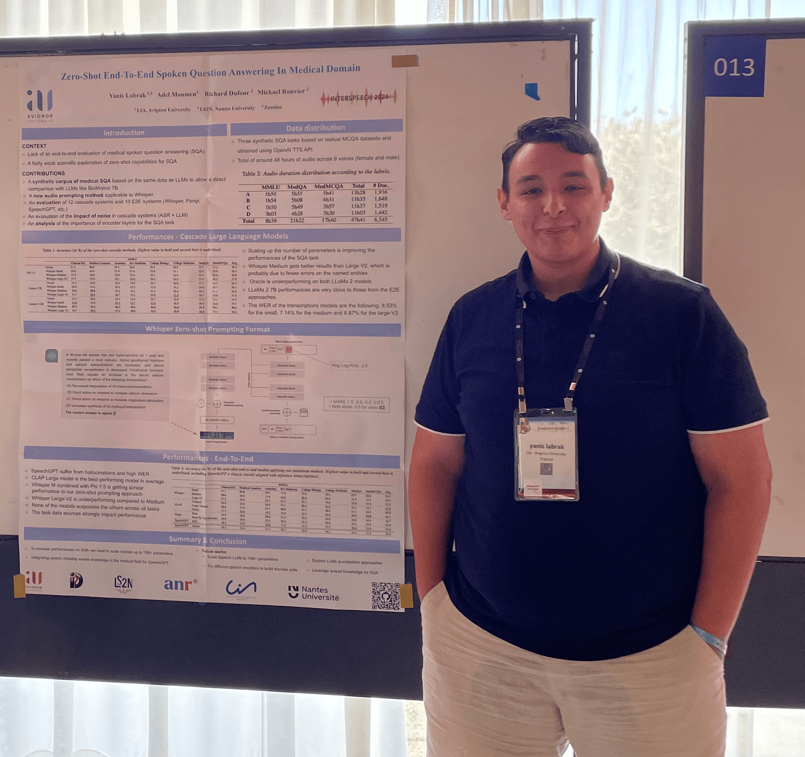
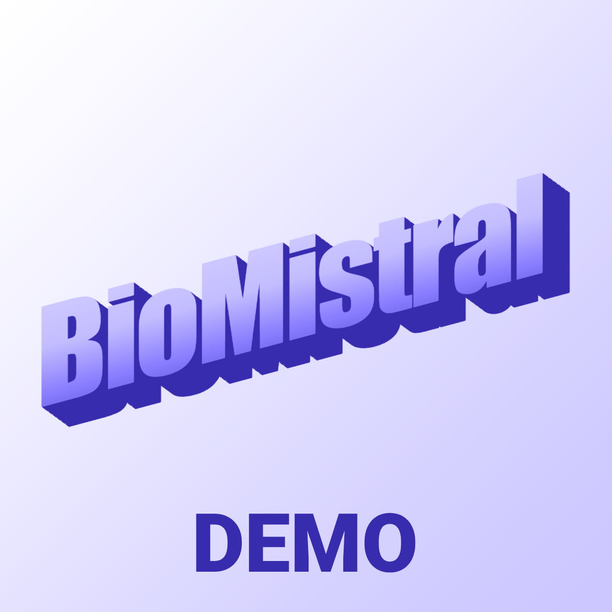
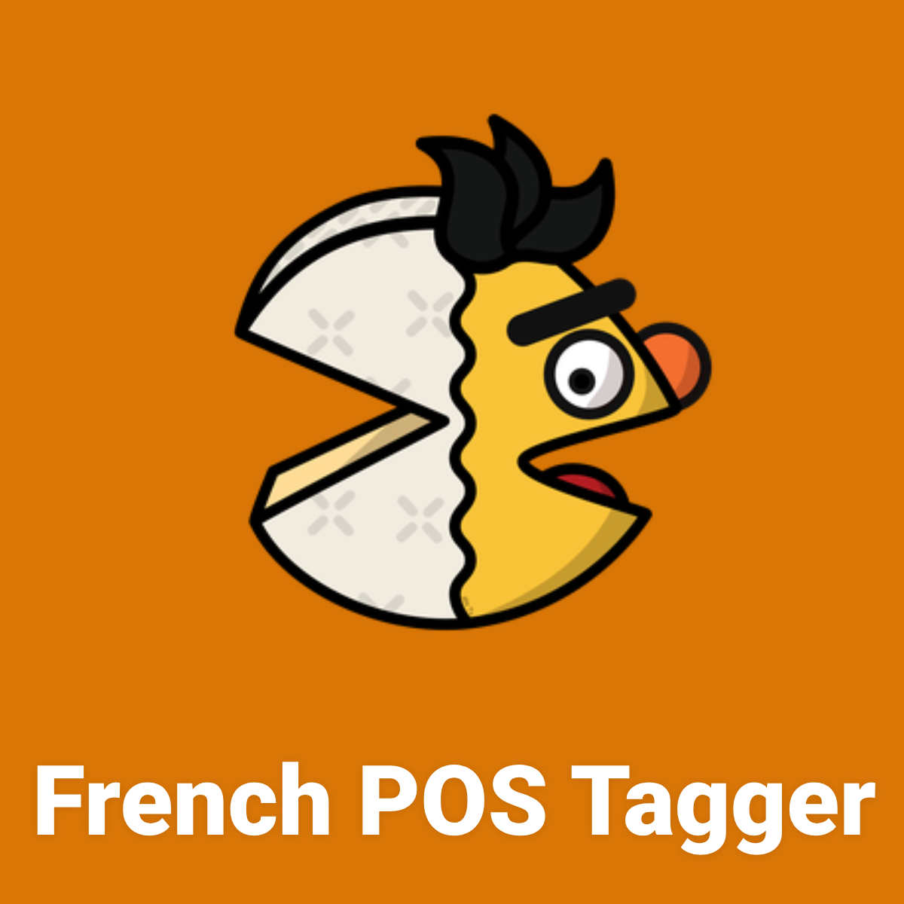
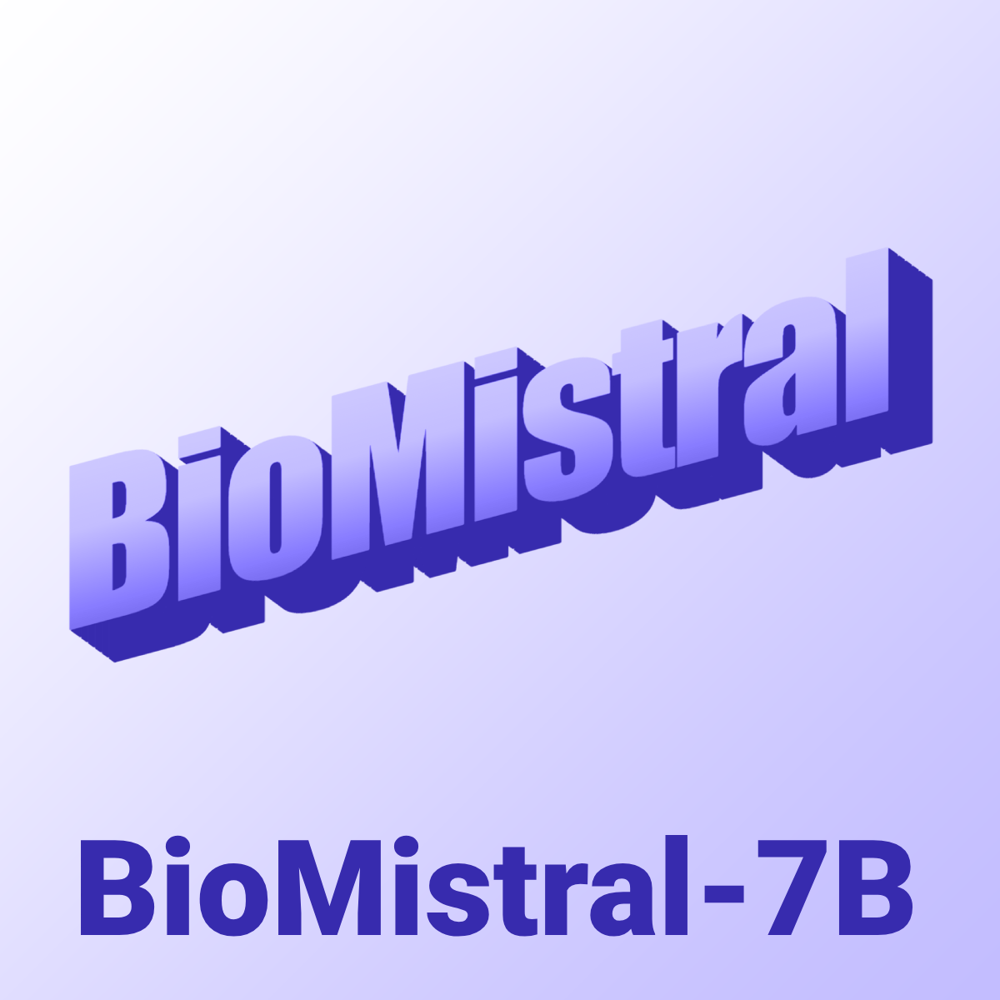
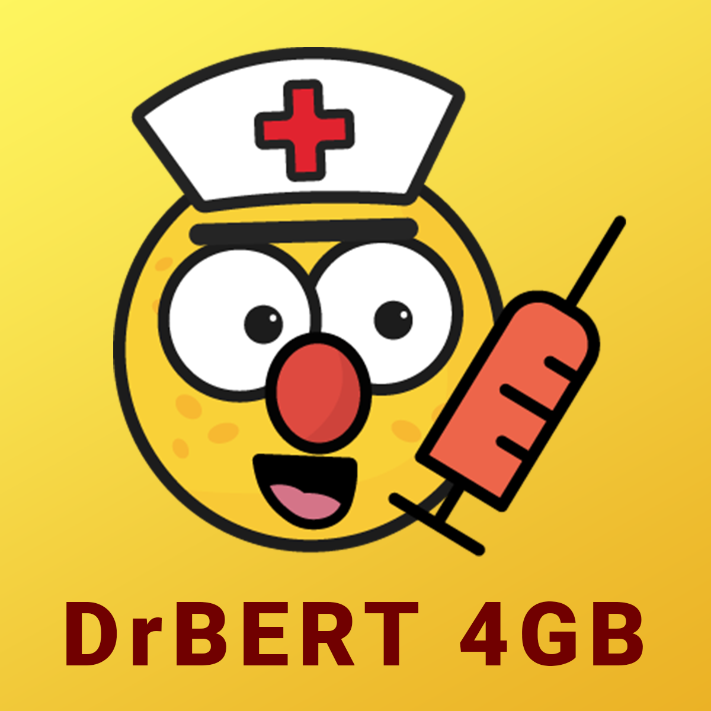
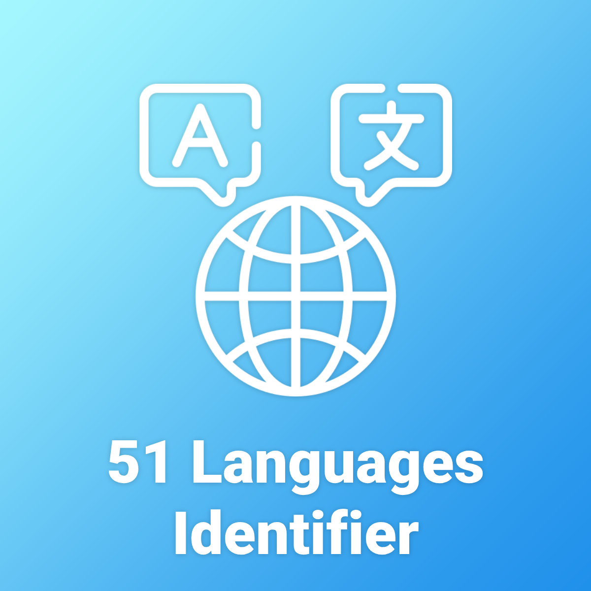
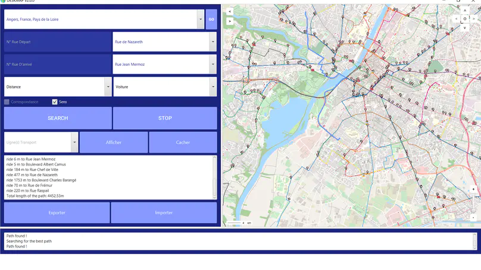

💼 I am a Postdoctoral Researcher at the Idiap Research Institute (Switzerland), specializing in Speech and Natural Language Processing (NLP). I previously completed my PhD at the Avignon University CS Research Lab (LIA) in collaboration with Zenidoc.
🔬 My research focuses on advanced Machine Learning, specifically Large Language Models (LLMs) and Speech Recognition tailored for complex, domain-specific applications like Healthcare.
🔭 Currently, I am investigating the multimodal integration of speech into textual LLMs. My goal is to leverage massive textual knowledge to enable seamless End-to-End performance, replacing traditional cascaded systems with more robust, unified architectures.
Spaces on HuggingFace
|
 |
 |
Models on HuggingFace
|
 |
 |
 |
Connect with me 😃
|
|
|

|
- Speech processing
- Multi-modality (speech-text)
- Autoregressive modeling
- Synthetic data generation
- Healthcare domains
-
PhD in Computer Science, 2025
Avignon University
-
MSc in Computer Science, 2022
Avignon University
-
BSc in Computer Science, 2020
Avignon University
Research Demo
Interactive demonstration of End-to-End synthetic clinical data generation using SDialog.
Role: Cardiologist
Tone: Empathetic
Profile: 55yo Male
State: Post-medication
[Clinical] Coherence: 0.98 | Med-Accuracy: 0.95
[Safety] Toxicity: 0.00 | Bias: 0.02
[Linguistics] Fluency: 0.97 | Lexical-Diversity: 0.88
BP is 135/85. Increase Lisinopril to 20mg. No cough, mild fatigue.
SLU:
[Intent: Update_Prescription] [Slot: Med=Lisinopril, Dose=20mg][Intent: Report_Symptom] [Slot: Symptom=Fatigue]Summary:
BP remains elevated (135/85). Lisinopril increased to 20mg. Patient denies cough but reports afternoon fatigue.
Experience
- Member of the Speech & Audio Processing group under the supervision of Petr Motlicek.
- Researching the transition "From Bias to Fairness" to build the next generation of Trustworthy AI systems.
- Developing robust speech and language models with a focus on ethical AI, bias mitigation, and transparency in large-scale multimodal systems.
- Focus Areas: Trustworthy AI, Speech Processing, Multimodal LLMs, Fairness & Ethics.
- Subject of research : AI Lyrics Detection
- Applied Research on AI generated lyrics detection for filtering daily ingested tracks and identifying fraudulent content.
- Explore the capabilities of lyrics based text embeddings to guide content recommendation in production.
- Tech Stack: Docker, Python, Pytorch, Google Cloud Platform, BigQuery, Kafka, CUDA, Flask, SQL.
- Member of the JSALT 2025 "Play your Part" team.
- Collaborated on Synthetic Dialog Generation and Analysis using LLMs.
- Contributed to the open-source development of sdialog.
- Thesis title: Language Models at the Crossroads of Text and Speech for Healthcare Applications
- Organizer of the 2023 edition of the French NLP shared task DEFT (DÉfi Fouille de Textes) in Paris. The shared task was articulated around our medical multiple-choice question answering dataset FrenchMedMCQA and brought together 6 academic and industrial teams for a total of 34 participants.
- Major success of the release of our open-source models (up to more than >110k downloads/month, multiple industry applications).
- Presented my research in person to the French National Research Agency (my research is core to the MALADES project.
- My work was featured in multiple news articles and a wide range of podcasts, I gave 3 interviews (CNRS, l’usine digitale and ActuIA).
- Teachings: Parallel Programming for MSc 1st year students (c, c++, cuda), End-to-end Software Development for MSc 1st year students (python, flask, dart, flutter, JavaScript, nodejs, tesseract-ocr) and Web & Database Architecture for BSc 2nd year students (php, javascript, jQuery, css).
- De-identification of electronic health record using deep neural network
- Automatic Named Entity Recognition (NER) for medical records structuration and posologic entities extraction
- Recommendation system for ICD-10 and CCAM codification based on the patient’s medical record (operative report, anesthesia report)
- Introducing Part-of-speech tagging into an E2E ASR via a dual decoding to reduce semantic and grammatical errors in medical transcriptions.
- Collect industry partners needs and study the technical feasibility of projects
- Manage the technical deployment of solutions developed in academia
- Promote state-of-the-art technologies and find out new applications
- Transfer of technical knowledge to technical teams
- Supervise annotations phases for named-entity-recognition, part-of-speech tagging and documents classification
- Manage in-house technological benchmarking comparison
Recent Publications
Recent Posts
Projects

From scratch implementation of a desktop version of a map browser such as Google Maps, coded in Java using canvas rendering. On top of it, I implemented a A-Star variant to optimize user trip planning by considering multi-modality (bike, foot, car, real-time bus of Nantes metropole) and respectfull of the regulation (one-way, ...).